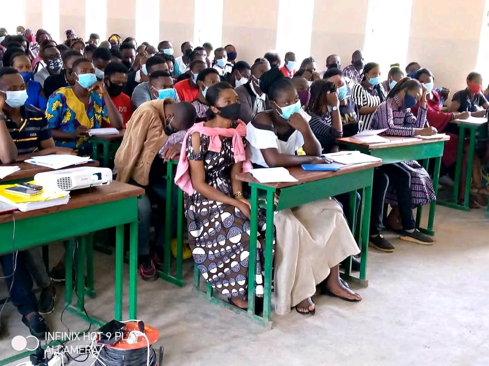

Sanitas - Scientia - Conscientia

L’Institut Supérieur des Techniques Médicales M’SIRI 1er (ISTM M’SIRI) est un établissement d’enseignement supérieur spécialisé dans la formation des professionnels de la santé en République Démocratique du Congo.
Nous formons des étudiants capables de répondre aux besoins médicaux avec discipline et excellence.
Voir plus